Currently, the price of real estate is so high that buying a house
becomes extremely difficult.
Accordingly, finding a suitable
and financially suitable rental is always a painful problem for
students as well as employees.
From that problem, I came up
with the idea to create a model that will forecast house prices
based on criteria such as Surface area, Number of floors, Number of
bedrooms,... You can try to give requirements your rental housing
needs, my model will give you a home price prediction that fits all
of your criteria, helping you to weigh and adjust the criteria to
suit your finances individually.
Here is the resulting demo
of the model. We will enter the values we want from the house we
will rent.
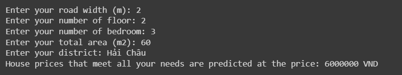
In the example, I entered my desired criteria and the model
returned the result that my house price would be around 6,000,000
VND per month.
So let's start with a detailed look at the process of
creating it.
1. Data mining
I use the website https://alonhadat.com.vn to get data.
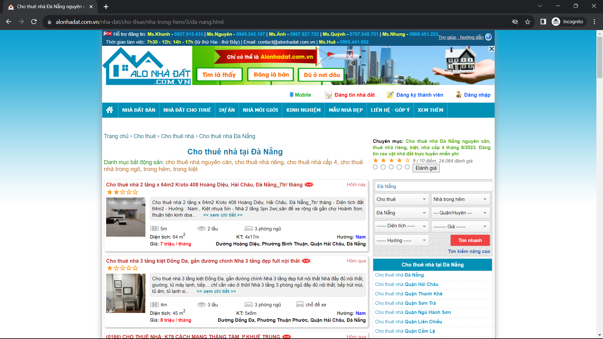
Right now I'm only focusing on the city I live in, so I'll filter
out location = Da Nang. The link to this page will become
https://alonhadat.com.vn/nha-dat/cho-thue/nha-trong-hem/3/da-nang.html
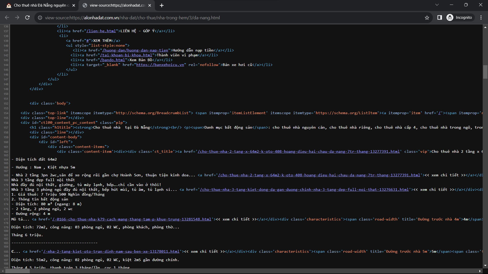
I use my knowledge of HTML to understand the
structure of web pages. Then use Python's BeautifulSoup library and
Data Mining knowledge to get the data.
Start by importing the necessary libraries.
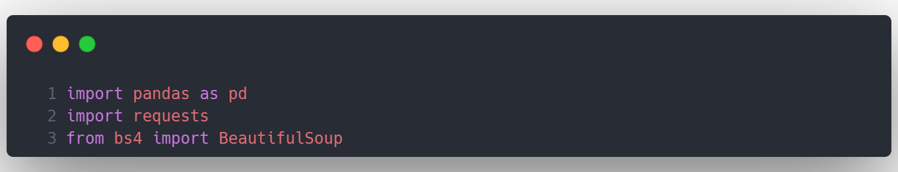
Create a data frame containing the data to be
mined
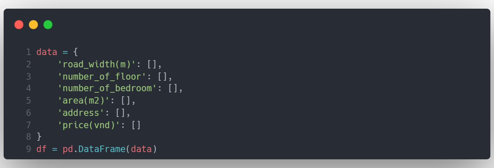
Conduct data mining by analyzing each element in
the HTML and separating them. Here we will get the data for the last
8 pages of the web page so I use a for loop from page 1 to page 8.
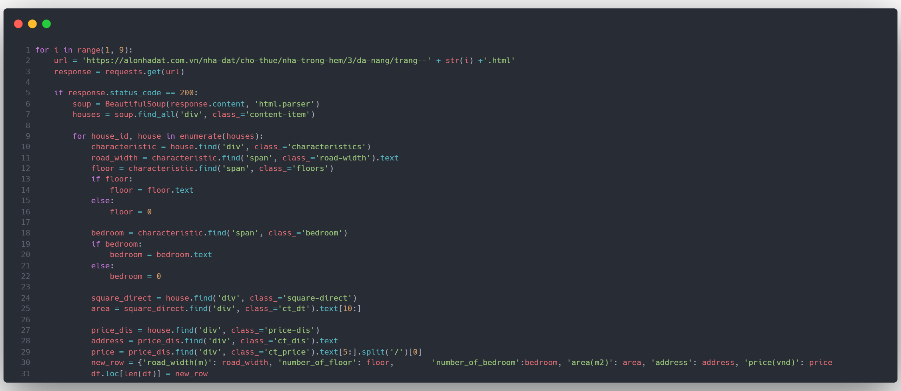
Then save the df file in CSV format.
data.csv.
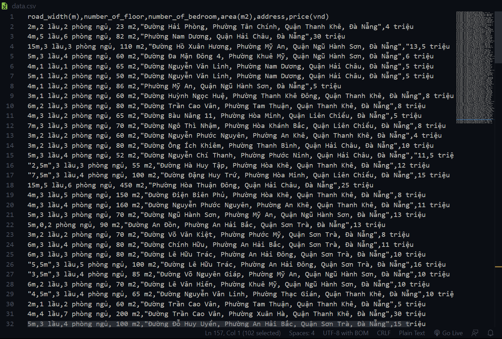
2. Clean data
Read the data.csv file and print it out.
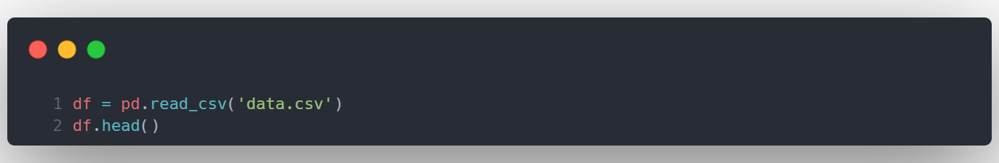
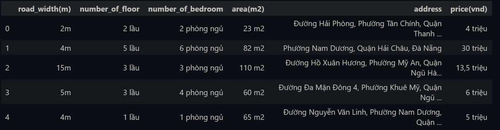
Preliminary check of data.
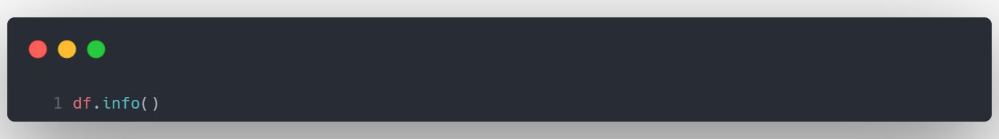
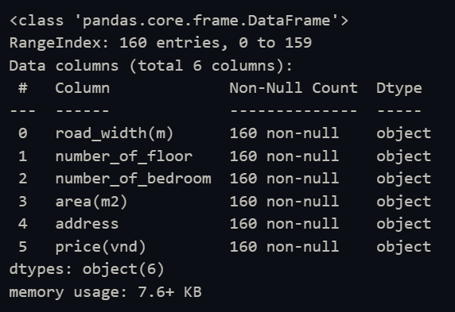
Looks like we have a "quite clean" dataset.
Look at the head of the dataset, what to do now is to remove
the unnecessary prefixes and suffixes in the columns road_width(m),
number_of_floor, number_of_bedroom, and area(m2).
Next, we need to convert "triệu" to a real number for ease
of calculation.
Finally, to avoid complications, I'll just keep "district"
in the address column.
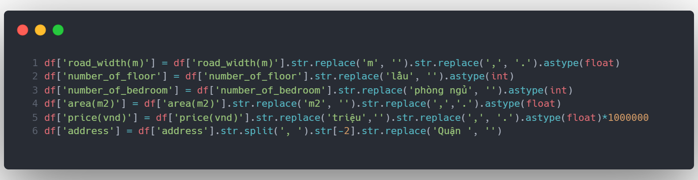
Let's see the results after cleaning.
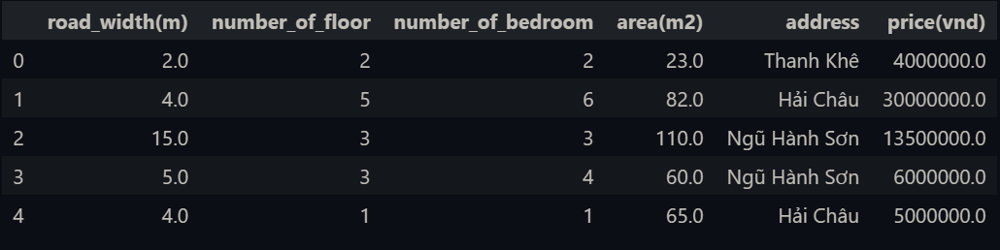
Great! Everything is ready for the next step.
3. Split X, y & Encode data
As you can see, in the address column we have
the names of the districts. The model will not understand this type
of categorical data. We need to encode them so that the model can
learn.
I first split the data into X (the properties of the house,
from the road_width(m) column to the address column) and y (which is
the price - the result we need to predict).
Then I use ColumnTransformer and OneHotEncoder to encode the
address column.
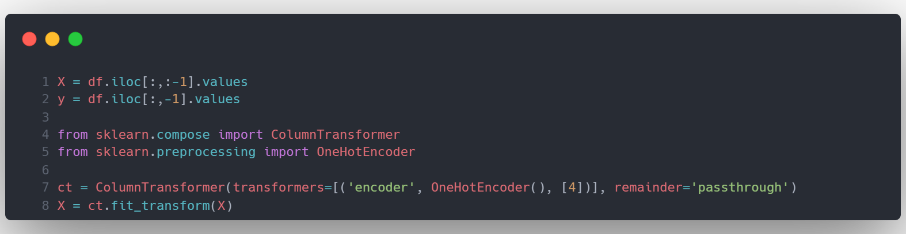
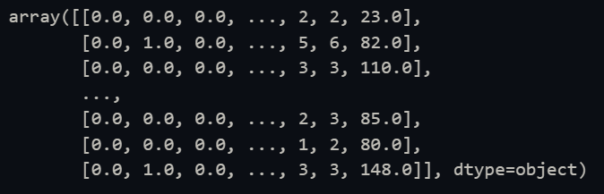
This is X after encoding. It can be seen that
the address column is now encoded as 0 - 1 and brought to the top.
4. Split train, test & Scaling data
I use sklearn's model_selection to separate
train and test data. Here I take 85% as train and 15% as test and
use a random seed as 1 to easily check for errors if any.
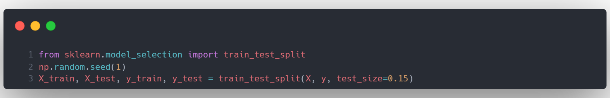
It can be seen in our data that there are some
columns with larger values than the remaining columns such as
area(m2) and road_width. So we need to scale them all to make the
training more accurate.
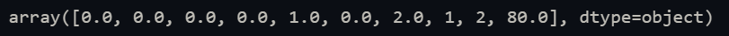
Now this is X_train[1], we will scale from the
column with index 6 onwards because, before that, columns 0-1
represent the address column.
I use StandardScaler to scale the data.
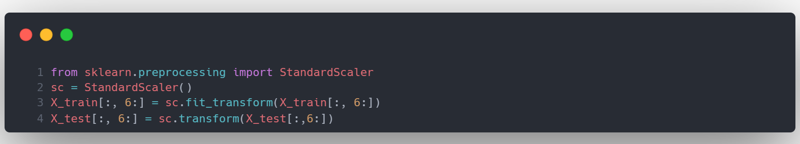
After scaling, X_train has the following form,
similar to X_test
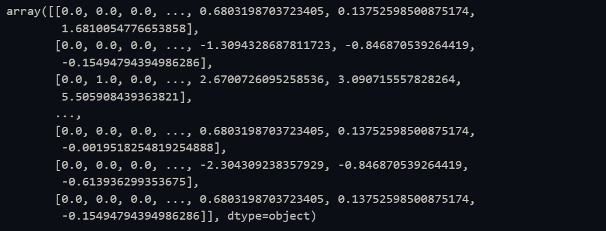
5. Train the model
First I would use DecisionTreeRegressor.
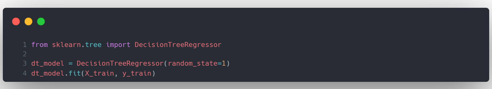
After the training is done, I will create a
dataframe to compare the actual results of the y_test and the
predicted results from the X_test. I added a diff column.
Dif is the difference between the actual value and the
predicted value (%), the lower the number, the more accurate the
prediction model is with the actual value, dif 0% means the
prediction is 100% accurate. Mean diff is showing the accuracy of
the model, 0% is the best,
with the mean diff being x%, the model predicts x% deviation from
reality.
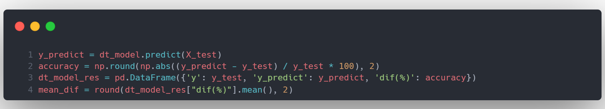
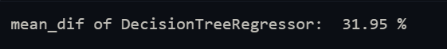
This is the result of the model based on
DecisionTreeRegressor
I will do the same with
RandomForestRegressor
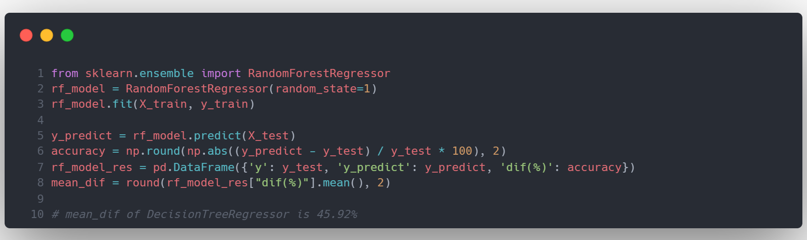
It can be seen that in this case,
DecisionTreeRegressor gives a better prediction than
RandomForestRegressor.
To be more intuitive we will visualize
this data. Import two additional libraries needed for data
visualization.
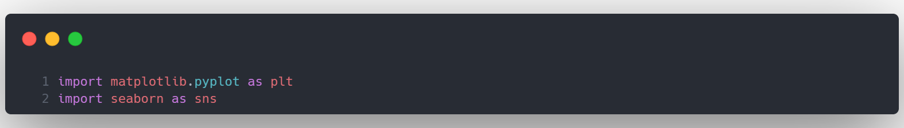
I use a line chart to compare y_test (actual)
and y_predict. This is according to DecisionTreeRegressor.
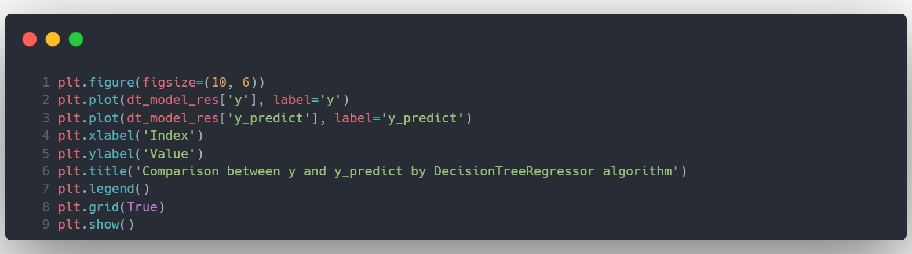
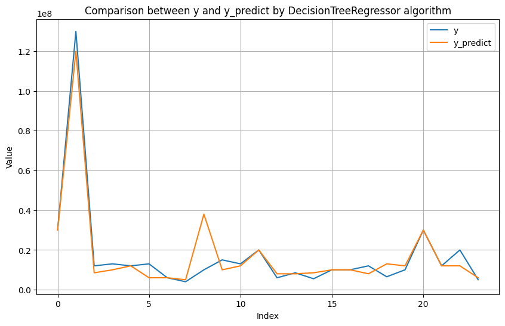
And this is according to RandomForestRegressor.
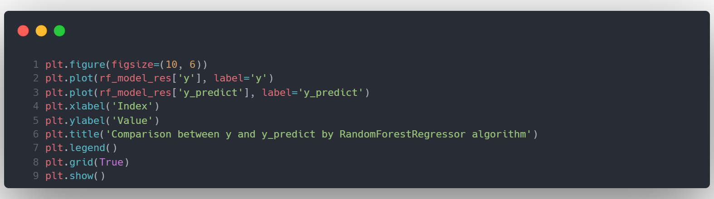
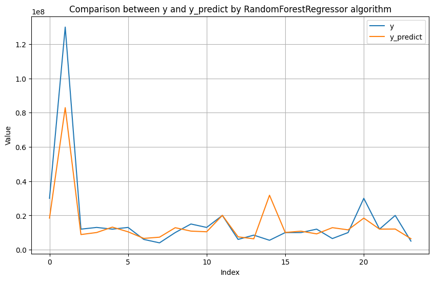
6. Predict new data
Creates a 2D array containing new data entered
by the user. Convert the data types accordingly and add to the
array.
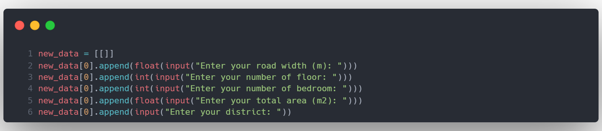
We proceed to encode and scale the new data. We
won't fit but just transform because we already fit into X_train
before. We will then predict house prices based on user-entered
criteria using a more accurate model.
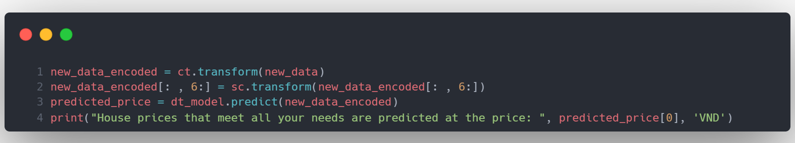
7. Strengths and limitations of the model
In terms of strengths, this is a model with the
task of predicting house prices only in the Da Nang city area, so it
is highly centralized, maximizing accuracy. High applicability
because the need is quite practical.
In terms of weaknesses, the input data set is quite small,
only about 136 lines (85% train size of 160), so the results are
still not really accurate (the best accuracy rate is still deviated
by nearly 32% compared to actual results).
The future can be improved by expanding the input data.
Refer to more from many sources, and many different rental websites.
Can scale to other major cities.